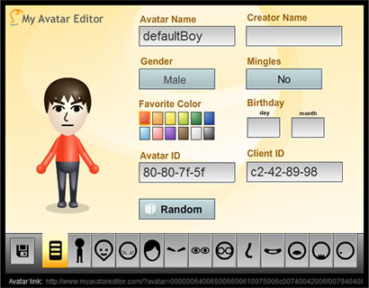
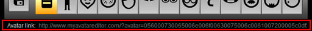
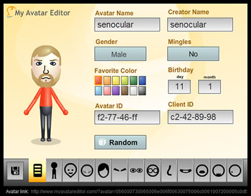
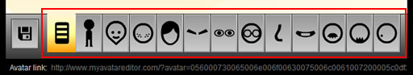
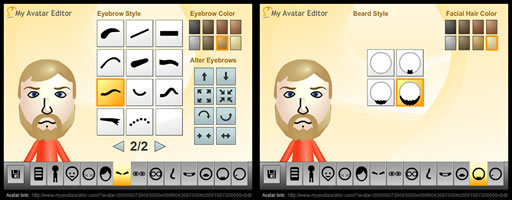
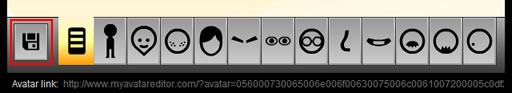
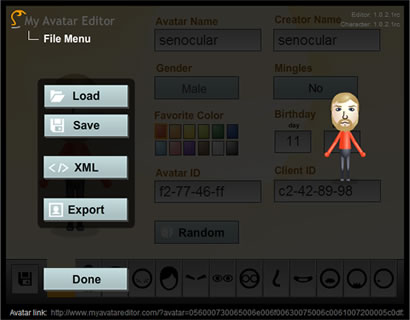
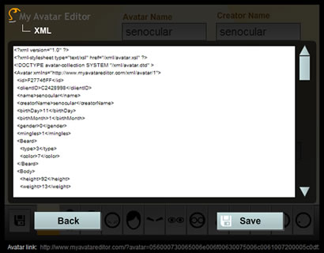
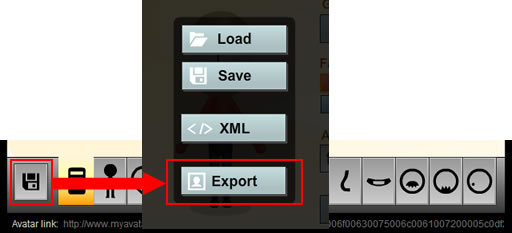
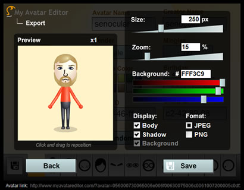

Guide
This user's guide will familiarize you with the features and capabilities of My Avatar editor.
Table of Contents
About My Avatar Editor
To put it simply, My Avatar Editor is a free, online tool for creating and editing avatars. Avatars are digital representations of real people. When you create an avatar in My Avatar Editor, you can then save it for later use or share it with others using a unique avatar URL.
A unique characteristic of My Avatar Editor is that the characters is creates is compatible with Mii™ characters people can create on the Nintendo® Wii™. A Wii is not required to have fun with this tool; it only adds to the overall experience.
One thing My Avatar Editor is not, is a web service. In other words, if you are a webmaster who manages their own website and want to digitally request a graphical image of an avatar to be loaded into one of your web pages, My Avatar Editor is not capable of making that happen. All avatar characters are created client-side in Adobe Flash Player.
The underlying reason for the creation of My Avatar Editor was to allow users to be able to create, save, and share their avatar (or Mii) characters. More specifically, a key goal of the editor was to allow users to export their avatars to popular image formats such as JPEG and PNG so they could be used in forums, blogs, or in any other context on the web, especially when technology for this did not exist for the Wii.
MyAvatarEditor.com initially started out as MiiEditor.com. However, the powers that be, though impressed with the fan site and the capabilities of the editor, were concerned about the improper use of their registered trademarks, notably the use of "Mii" in the domain name. As a result, the domain was changed and necessary alterations were made to the editor to help distinguish it from being an officially supported site, which it is not.
MiiEditor.com was, and MyAvatarEditor.com is, and always will be, a fan site created with the best intentions in mind by expanding those capabilities that exist in the home gaming space and helping users share their love for avatars in the context of the world wide web.
System Requirements
Requirements for use of My Avatar Editor in the browser:
Requirements for the My Avatar Editor desktop application:
Note that not all platforms support Flash Player 10 or AIR 1.5. For example, as of the time of this writing, Flash Player 10 is only supported on:
- Windows desktop computers
- Macintosh desktop computers
- Linux desktop computers
For more information regarding supported platforms, see the Flash Player 10 system requirements and/or Adobe AIR 1.5 system requirements documentation. Not supported at this time are platforms such as:
- Nintendo's Wii (only supports up to Flash Player 9)
- Sony's PlayStation 3 (only supports up to Flash Player 9)
- Mobile devices
As a result, currently, use of My Avatar Editor is limited to desktop computers.
Mii™ Compatibility
My Avatar Editor supports the loading and displaying of Mii™ characters as found on Nintendo® Wii™ entertainment systems. My Avatar Editor is not capable of obtaining your characters files from your Wii or Wii remote; other tools provide that capability. However, once you have those files (usually using the .mii extension), they can be loaded into My Avatar Editor for viewing, editing, or exporting to an image.
To load a Mii character into the editor, use the Load option in the File Menu.
Creating and Editing Avatars
When you first open My Avatar Editor for the first time, either using this website or with the desktop application, you will be presented with a "default boy" character as a base for creating your own, personalized avatar. Creating avatars is simple. All you do is change settings on the screen as you progress through the different tabs of the editor and watch your character come to life.

When you're done creating a character, you can save it for later use. You can read more about doing this in the File Menu section. Additionally, whenever you come back to the editor, it will reload the last avatar you edited with it (both this website and the desktop application keep different copies of what this avatar is). When you open an avatar file and edit it, changes will not be saved to the file opened unless you re-save the avatar back to that file replacing the original.
Sharing Avatars
Once you have an avatar, the next step is to share it with the world. My Avatar Editor provides two primary means to do this: through a URL link or through an image.
Sharing links
Every time a new avatar character is loaded into the editor, or any time changes are made to an avatar, a URL at the bottom of the editor screen is updated.

This URL is a unique URL specific to the avatar currently in the editor. Navigating to this URL will load the main MyAvatarEditor.com web site with that character automatically loaded in.
You can select and copy it in the main URL field, or you can click on the text that says "Avatar link". This will open up the link in a new browser window.
As an alternative, you can share a link of just your avatar without the editor interface. For these URLs, you must include a "show" after the "helloiti.github.io/mae/" in the standard My Avatar Editor URL link. For example:
Sharing images
More likely you'll want to share your avatar by placing it on your blog or as your avatar icon in online forums. For this, My Avatar Editor allows you to export your avatars to either JPEG or PNG files for that purpose. The Export Screen is accessible through the File Menu.
Once you have saved your avatar as an image, you'll need to upload it to a server on the world wide web in order for others to see it. If you run your own server, then you probably know what you're doing there. However, if you don't, you can use any number of free services that allow you to host images online such as:
- flickr.com
- photobucket.com
- tinypic.com
- file.garden (Some ISPs may block this website)
- catbox.moe (Some ISPs may block this website)
General Characteristics
The General Characteristics tab is the first tab in the editor and the one that is first loaded when the editor is opened. This screen contains the more detailed characteristics of an avatar, many of which have no bearing on how the character actually looks.

- Avatar and Creator Names: These are the names of the avatar you're creating and the name of the person who created it. Names are limited to 10 characters.
- Gender: Determines if your avatar is a male or female. Visually, the only differences between the two are that females have a skirt.
- Mingles: This is a Mii character feature which determines if avatar characters can be propagated to gaming consoles of your friends.
- Favorite Color: This color determines the color of the avatar's shirt and any accessories in their hair on on their head (such as hats).
- Birthday: The day of birth for the avatar character.
- Avatar ID: A unique ID specific to the avatar character. This is represented by 8 hexadecimal characters (their values can be 0-9 and A-F). For Mii characters, this determines if the Mii is a new Mii or one that already exists on the Wii console. If a Mii on the console already exists with the same avatar ID as a character you're trying to add from the Wii remote, it will be replaced with the new one from the remote.
- Client ID: A unique ID specific to the "creator" tool of the avatar, like the Avatar ID, also represented by 8 hexadecimal characters. For the Wii, it represents the Wii itself. This value determines if a character has come from your Wii or someone else's.
- Random: When clicked, this button randomizes the characteristics of the avatar. Randomized characters have their name changed to Random and their creator changed to MAE (My Avatar Editor).
Other Characteristics
Characteristics of an Avatar can be modified through the different editor screens which can be found through the tabs at the bottom of the editor.

Each tab allows you to alter different characteristics. Characteristics can change in type, color, size, rotation, and position. Not all characteristics can be altered in the same way. For example, you can change everything for eyebrows, but you can only change the type and color for beards.

Additionally, some colors are shared between characteristics. For example Face Shapes and Facial Features each use the same Face Color. Additionally, both the Beard and Mustache each use the same Facial Hair Color.
File Menu
The file menu is accessible from the file button (floppy disk icon) to the left of the tabs.

When clicked, the main file menu will appear.

The file menu allows you to:
- Load an avatar file from your computer
- Save an avatar file (.mae binary) to your computer
- Access the XML Screen
- Access the Export Screen
When loading an avatar from your computer, you can load any known format including .mae, .mii, and .xml. XML files must be in the format provided in the XML Screen, or at least in a format used by an older version of the editor.
When saving files from the main file menu screen, your avatar will be saved to a binary (as opposed to text) file with the extension .mae (for My Avatar Editor). In terms of the data it contains, its equivalent to Mii character files used by the Wii. If you have the Desktop version of My Avatar Editor installed, you can double-click this file to immediately open it within the editor. If you would rather save the character in a text file - that is, something you can open in a standard text editor and read or modify by hand - then you can instead save the avatar as XML.
XML Screen
The XML Screen is accessed from the File Menu.

It contains a scrolling field containing an XML representation of the current avatar being edited in the editor.

If any changes are made to the XML in this view, they will be applied to your avatar once you hit the Back button to return to the main File Menu.
Clicking the save button will allow you to save an XML file on your computer containing the XML shown in this screen. To load XML back into the editor, you can use the load button in the main File Menu. As an alternative, you could also copy and paste your XML into the XML field. When clicking the back button, it will be loaded into the editor.
In addition to XML, the text field in the XML Screen can also also read other avatar data such as the avatar code used in avatar URLs.
Export Screen
The Export Screen is accessed from the File Menu.

It allows you to export your avatar as an image file, as either a JPEG or PNG format, to your computer.

Avatars exported from My Avatar Editor as images will always be exported in a square shape, though you can adjust the size of this shape through the export options. Export options include:
- Size: The size, in pixels square, of the image when it is saved to your computer. The default size is 250 x 250 px, the same size as the preview area. As you adjust the size, the preview will not change in size, however the "x1" indicator in the top right of the preview will indicate how much larger or smaller the final, exported image will be in relation to the preview window. The value of Size can be changed through the Size text field or through the slider.
- Zoom: Zooms in (or out) the avatar in the preview area making it larger or smaller. The value of Zoom can be changed through the Zoom text field or through the slider.
- Background: The color of the background of the image if the image includes a background. JPEG images will always include a background. You may choose not to have a background to PNG images. The value of Background can be changed through the Background text field (using a hexadecimal color value) or through the sliders.
- Display: Determines what part of the character is visible in the export. You may choose to hide the body, the shadow, and/or the background (only for PNG files).
- Format: Specifies the format of the image being exported. Choices include JPEG (100% quality) or PNG (24bit). PNG images can optionally not have a background, though JPEGs are forced to include it.
- Preview: A preview of the avatar is on the left. It will always be displayed at 250 x 250 px even if the image being exported will be smaller or larger (based on size). By clicking in the preview you can drag the avatar character around to reposition it with respect to the center of the image.
Clicking the save button will prompt you to save the exported version of your avatar to a location on your computer. Clicking Back will return you to the File Menu.
Using My Avatar Editor on Your Website
If you'd like, you can Download My Avatar Editor, or just the avatar character component so that you can use it on your own web site. For more information on setting this up, see the Developer section.
Troubleshooting
My Avatar Editor does not load or display or a screen appears with the message "Please Update Your Flash Player"
My Avatar Editor was built using Adobe Flash. It requires version 10 of Adobe Flash Player or greater to function properly. Seeing this message, or not seeing the editor at all, would suggest that you need to install or update your version of Flash Player. You can do so here: http://get.adobe.com/flashplayer.
Depending on your platform, you may or may not be able to install Flash Player 10. For more information, see System Requirements.
Load or Save buttons do not work using Internet Explorer on Windows Vista
If you are finding that the Load or Save buttons in My Avatar Editor are not working when viewing the editor in Internet Explorer on Windows Vista, this may be because that functionality is being blocked by Protected Mode. If you turn off Protected Mode or use an alternate browser such as Firefox, then that functionality should be restored.